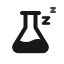
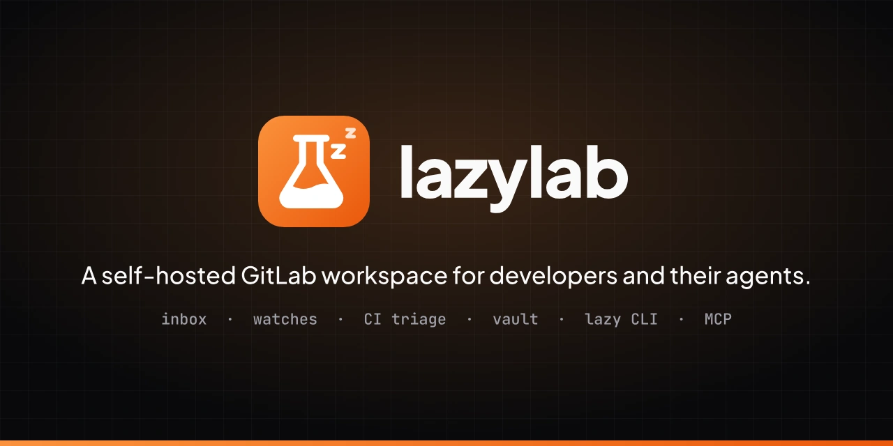

- Flask
- The lab: GitLab, and a workbench that runs on your own machine.
- zz
- The lazy: lazylab watches pipelines, tokens and merge requests so you do not have to.
- Ember tile
- Continues the orange accent of the app.
Brand kit
A self-hosted GitLab workspace for developers and their agents. Every file below is generated from one reference SVG and brand.config.json.
The idea
Logo files
Use SVG wherever it is accepted. PNG and WebP are exports of the same artwork.








Everything on one sheet: brand-sheet.svg (webp).


Clear space and size
16
24
32
64
96
Colour
Click a swatch to copy its hex value. The same values are in tokens.css as --ll-<token> and in tokens.json.
Type
Aa lazylab
Plus Jakarta Sans for headings and the wordmark; Plus Jakarta Sans for text.
$ lazy push --detach
JetBrains Mono for code, commands and ids.
Usage
Do
- Use the files as supplied, scaled proportionally.
- Use the light logo on light backgrounds and the dark logo on dark ones.
- Use a one-colour mark on busy images or on backgrounds close to the brand colour.
- Keep a quarter of the mark’s width clear on every side.
Do not
- Recolour, stretch, rotate or outline the mark.
- Add shadows, glows or other effects.
- Set the wordmark in another font.
- Place the full-colour mark on a background of the same colour.
Where the files are copied
Each build refreshes these copies, so projects never edit generated files by hand.
| Directory | Files |
|---|---|
../src/assets/brand | svg/lazylab-mark.svg, svg/favicon.svg, png/apple-touch-icon.png |
../docs/src/assets/brand | svg/lazylab-mark.svg, svg/favicon.svg, png/apple-touch-icon.png, png/lazylab-social.png |